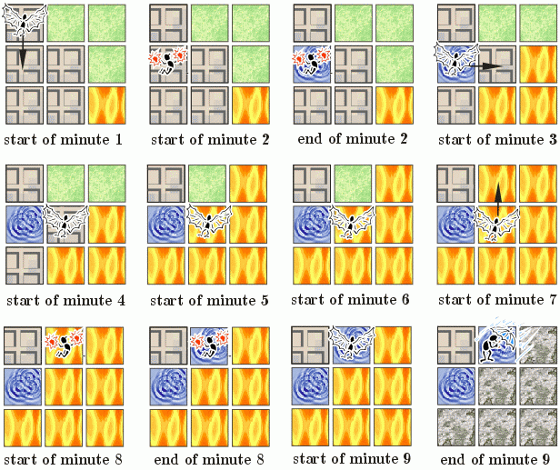

|
|||||||||||||||||
|
Server time: 2006-01-10 05:49:55 |
SPOJ Problem Set222. The Burning CityProblem code: BURNCITYTerrorists from the BBFO have raised fires in the capital of Byteland! As is it is a hot summer day, most of the fire brigade have quite naturally taken a day off, and so the noble task of extinguishing all the fires falls to the only officer on duty. By now you will probably not be surprised to learn that he is in fact... Johnny. This enterprising youth remains undaunted by the challenge facing him, and, taking advantage of the absence of his superiors, he decides to use his favourite fire fighting technique. So, he loads the fire station's helicopter with as many dynamite charges as it can carry, and takes off on his errand of mercy. From up there in the sky Johnny can see the city as a square, sliced into smaller, identical squares by a regular grid of streets. Every square contains one of three kinds of terrain - buildings, grassland or water (perhaps most firemen would go into further detail when analysing terrain, but you really can't expect that from a firefighter whose preferred method of extinguishing fires is dynamite, can you?). Johnny starts out in the centre of the square corresponding to the fire station. In the time from the start of a minute to the end of that minute he can move to the center of one of the four adjacent squares (but he is not allowed to leave the city). While over the center of a square he can choose to drop a single dynamite charge on it. He starts preparing the charge at the beginning of a minute, and it is dropped from the helicopter at the end of the same minute. Everything on the square on which the bomb was dropped is blown apart, and in its place a crater is formed and instantly flooded by subterranean waters. The fire spreads in a most predictable way: if a square starts burning at the beginning of minute m, then all four adjacent squares will catch fire at the start of minute (m+2). The only exception is a square filled with water (either naturally, or by Johnny's bombs) which never catches fire. If a square starts burning, all property on it is instantly destroyed. Once a square starts burning it will only stop burning if Johnny blows it up, or when the monsoon rain comes and floods the city, at the end of the h-th minute of firefighting. Johnny's main objective is to save as many squares with buildings as possible (from fire and dynamite). An example of the fire fighting process is presented below. InputThe first line of input contains a single integer t<=500, the number of test cases. The first line of every test case contains five integers n c h sx sy, respectively denoting: n - the length of one side of the city (measured in squares), c - the number of dynamite charges Johnny can use, h - the number of minutes after which the rain falls, sx, sy - the x and y coordinates of the square containing the fire-station from which Johnny starts, measured relative to the North-West corner of the city (1<=sx, sy<=n<=50, 0<=c<=h<=5*n; there are about 10 test cases for all possible values of n). Finally, the map of the city is given in the form of n lines of n characters each, each corresponding to the state of a square at the start of the fire fighting ('b' - building, 'g' - grassland, 'w' - water, 'f' - fire). OutputFor the i-th test case output a line containing the text 'city i Y' if you want to solve the test case or 'city i N' if you wish to leave it out. If you chose to the solve the test case, in the next line output a sequence of exactly h characters 'N', 'S', 'W', 'E', '+' or '-', corresponding to Johnny's actions in successive minutes (moving North, South, West and East on the map, dropping dynamite, not doing anything, respectively). ScoreThe total score is the total number of rescued squares with buildings taken over all test cases. ExampleInput: 5 3 2 9 1 1 bgg bbg bbf 4 2 8 3 1 bbbb bgwg fwgg gbbb 4 3 15 2 1 bbbb bbbb bbbb fbbb 4 3 15 2 1 bbbf bbbb bbbb fbbb 4 3 15 2 1 bbbf bbbb bbbb fbbb Output: city 1 Y S+E---N+- city 2 Y W+SSS+-- city 3 Y ESE+SW+S+------ city 4 Y +EES+W+-------- city 5 Y +ES+-E+-------- Score: 9 (The first test case is illustrated in the figure and Johnny can save one building. In testcases 2, 3, 4, 5 Johnny saves 4, 2, 2 and 0 buildings, respectively). Bonus info: The three digit number after the decimal point of your score denotes the number of test cases you have solved correctly, rescuing at least one building. Warning: large Input/Output data, be careful with certain languages
|
||||||||||||||||
| |||||||||||||||||